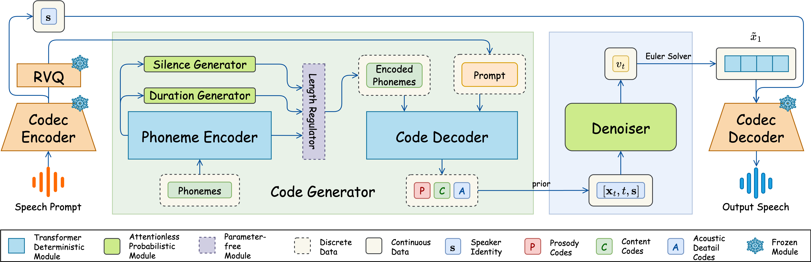
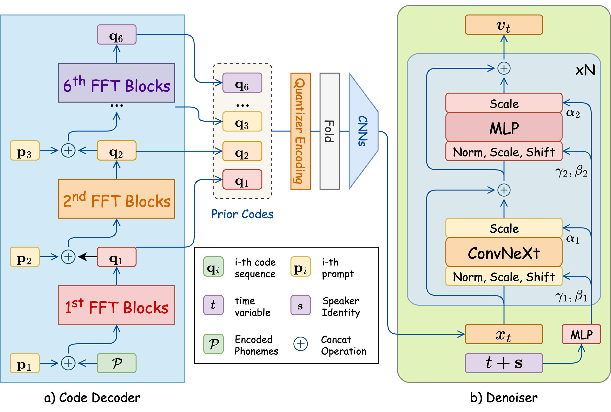

Code; Paper
Abstract Zero-shot Text-to-Speech (TTS) has recently advanced significantly, enabling models to synthesize speech from text using short, limited-context prompts. These prompts serve as voice exemplars, allowing the model to mimic speaker identity, prosody, and other traits without extensive speaker-specific data. Although recent approaches incorporating language models, diffusion, and flow matching have proven their effectiveness in zero-shot TTS, they still encounter challenges such as unreliable synthesis caused by token repetition or unexpected content transfer, along with slow inference and substantial computational overhead. Moreover, temporal diversity—crucial for enhancing the naturalness of synthesized speech—remains largely underexplored. To address these challenges, we propose Flamed-TTS, a novel zero-shot TTS framework that emphasizes low computational cost, low latency, and high speech fidelity alongside rich temporal diversity. To achieve this, we reformulate the flow matching training paradigm and incorporate both discrete and continuous representations corresponding to different attributes of speech. Experimental results demonstrate that Flamed-TTS surpasses state-of-the-art models in terms of intelligibility, naturalness, speaker similarity, acoustic characteristics preservation, and dynamic pace. Notably, Flamed-TTS achieves the best WER of 4% compared to the leading zero-shot TTS baselines, while maintaining low latency in inference and high fidelity in generated speech. Code and audio samples are available at our demo page.
Contents
Model Overview

Figure 1: Overview of Flamed-TTS. The input speech prompt is first processed by the Codec Encoder, which produces six latent sequences: one for prosody, two for content, and three for acoustic details. These encoded representations are then duplicated based on the durations predicted by the Duration Generator, while the Silence Generator inserts silences after each phoneme. The Code Decoder then generates predicted codes for the text prompt, conditioned on both the encoded phonemes and the latent representation of the reference speech. These predicted codes are converted into embeddings and merged before being passed through the Denoiser, where flow matching is performed. Finally, the output embeddings are fed into the Codec Decoder to synthesize the final speech waveform.

Figure 2: Code Decoder architecture. With the encoded phonemes, the codes are generated gradually by corresponding FFT Blocks with condition of prior code of speech prompt. These synthesized codes are combined by a CNN module. This embedding is finally finetuned by the Denoiser with flow matching algorithm.
Zero-shot Generation (LibriSpeech)
| Content | Prompt | Flamed-TTS (Ours) | Spark-TTS | VoiceCraft | Natural Speech 2 | VALL-E | F5-TTS | OZSpeech |
|---|---|---|---|---|---|---|---|---|
| these thoughts agitated me all day and my imagination scarcely calmed down after several hours sleep | ||||||||
| every plant in the grass is set formally grows perfectly and may be realized completely | ||||||||
| sir i have it in command to inform your excellency that you have been appointed governor of the crown colony which is called britannula |
| Content | Prompt | Flamed-TTS (Ours) | Spark-TTS | VoiceCraft | Natural Speech 2 | VALL-E | F5-TTS | OZSpeech |
|---|---|---|---|---|---|---|---|---|
| january and february of eighteen thirty seven had passed away and still there was no reply from southey | ||||||||
| to be or not to be that is the question whether tis nobler in the mind to suffer the slings and arrows what no hamlet speaking | ||||||||
| the stop at queenstown the tedious passage up the mersey were things that he noted dimly through his growing impatience |
| Content | Prompt | Flamed-TTS (Ours) | Spark-TTS | VoiceCraft | Natural Speech 2 | VALL-E | F5-TTS | OZSpeech |
|---|---|---|---|---|---|---|---|---|
| double nine two three elsinore double nine yes hallo is that you horatio hamlet speaking | ||||||||
| uncas cast his skin and stepped forth in his own beautiful proportions | ||||||||
| all that i am doing is to use its logical tenability as a help in the analysis of what occurs when we remember |